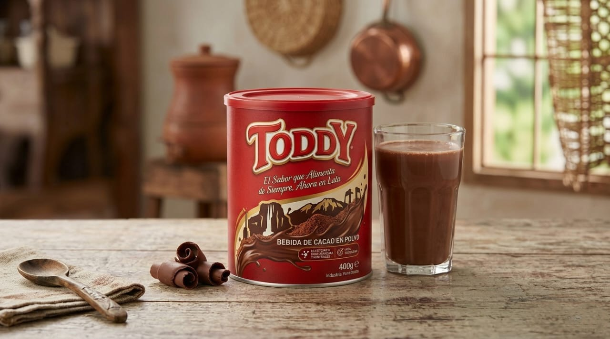
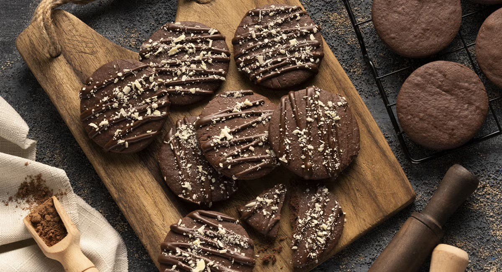
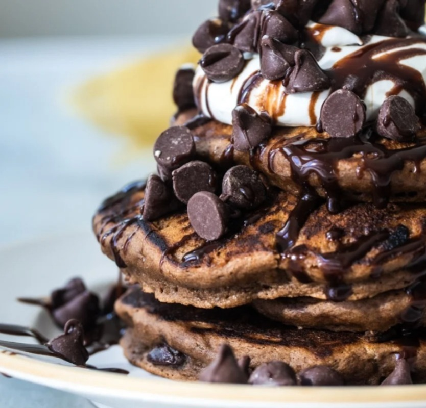

Explora formas creativas de combinar el sabor de siempre con la mejor harina de Venezuela.


"Hacer las galletas Mary con Toddy es el plan favorito de mis hijos los domingos. ¡Simplemente increíble!"
— Carmen G., Caracas
"Nunca pensé que la Harina Mary Todo Uso combinara tan bien con el cacao. Mis tortas ahora tienen otro nivel."
— Ricardo M., Valencia
"La edición especial de la harina es un éxito. Súper fácil de usar y el sabor es 100% el Toddy que amamos."
— Sofía L., Maracaibo